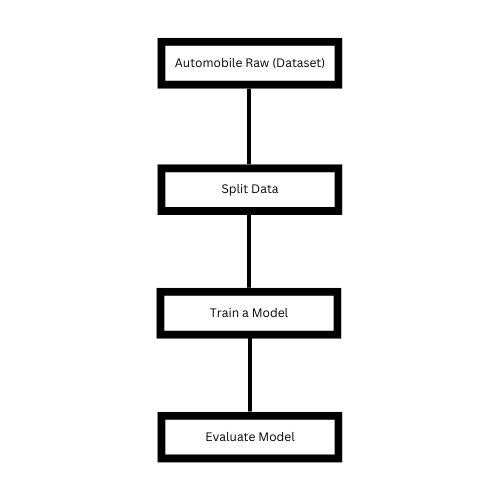
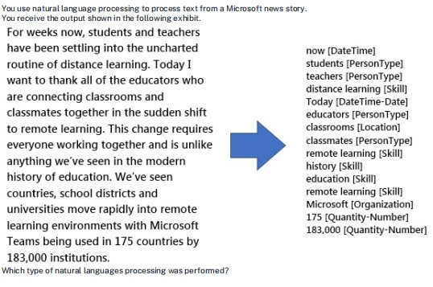

1. Which statement belong to Anomaly detection?
2.An automated chat to answer questions about refunds and exchange.
3. Implementing Processes to ensure that decision made by AI systems can be overridden by humans.
4.You run a charity event that involves posting photos of people wearing sunglasses on Twitter. You need to ensure that you only retweet photos that meet the following requirements: ✑ Include one or more faces. ✑ Contain at least one person wearing sunglasses. What should you use to analyze the images??
5.Labelling is the process of tagging training data with known values?

7. The ability to extract total & subtotal from a receipt is an example of?
8. You are building a tool that will process images from retail stores and identify the products of competitors. The solution will use a custom model. Which Azure Cognitive Services service should you use??
9. 
10.A validation set include the set of inputs example that will used to train the model?
11.You need to develop a mobile app for employees to scan and store their expenses while travelling. Which type of computer vision should you use?
12: Which Computer Vision feature can you use to generate automatic captions for digital photographs?
13. Which scenarios are examples of a conversational AI workload?
14.In which two scenarios can you use the Form Recognizer service?Choose Two.
15. You need to develop a web-based AI solution for a customer support system. Users must be able to interact with a web app that will guide them to the best resource or answer?
16:You have a knowledge base of frequently asked questions (FAQ). You create a bot that uses the knowledge base to respond to customer requests. You need to identify what the bot can perform without adding additional skills. What should you identify?